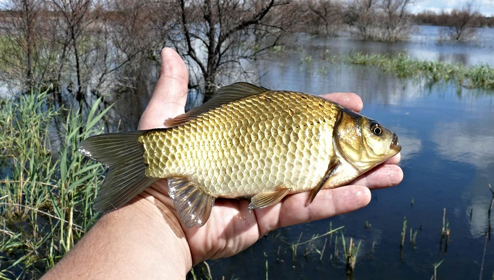
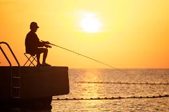
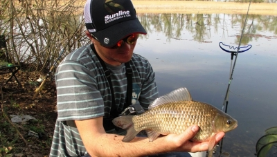
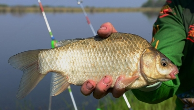

Карась - это рыба, обитающая в пресноводных водоемах. Имеет продолговатую округлую форму тела. Карась имеет небольшого размера голову и довольно толстую спину с высоким плавником. Размер рыбы в среднем составляет порядка 25 см при весе до 3-х кг. В отдельных случаях карась в длину может достигать 50-55 сантиметров. Вес при этом варьируется до 5-ти кг.
Существуют 5 разновидностей карася. Среди них выделяют 2 самых распространенных:
золотой или обыкновенный - водится практически во всех водоемах средней Европы;
серебряный - изначально обитал в водах Сибири, однако был искусственно распространен и по Европе.
Окрас при этом и у серебряного карася может быть золотистого цвета. Различают виды по форме головы - золотой имеет плоскую морду, а серебряный заостренную.
В природе встречаются и гибриды. Это связано с тем, что рыбы слишком близкородственные и имеют общую среду обитания.
Продолжительность жизни карася зависит от его вида. Серебряный в среднем живет 8-9 лет. Золотой живет дольше - порядка 12 лет.
1111
В этом варианте достаточно тяжело что-либо предвидеть. Так как не в каждом водоеме карась ловится одинаково хорошо. В некоторых может не ловиться вообще всю зиму. Это зависит от самого водоема. Вообще, в условиях обитания эта рыба неприхотлива. Но зато в зимнее время можно встретить рыбу покрупнее, так как мелкие карасики прячутся с началом прихода холодов, а большие могут плавать дальше. Именно тогда у вас есть большие шансы поймать карася, который будет иметь вес от 0,5 килограмма. 